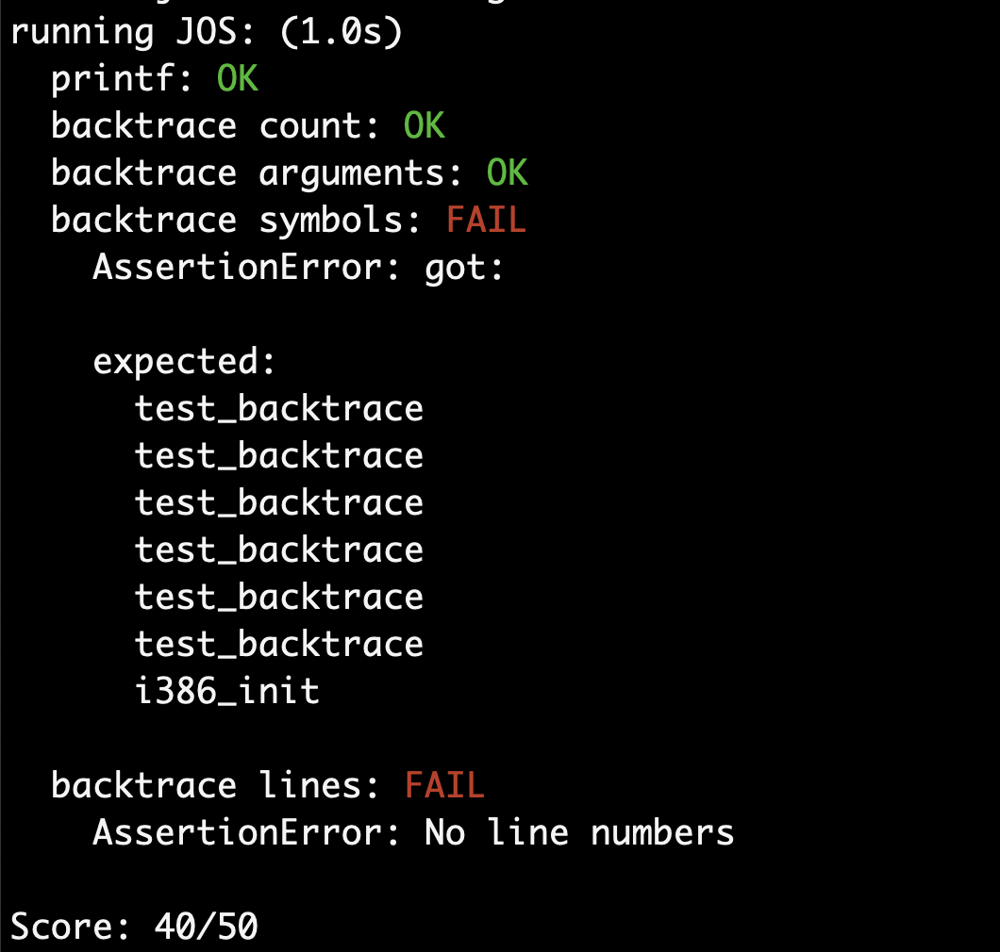

PC的物理地址空间
PC的物理地址空间布局如下图所示：
早期的16位PC只能支持1MB的物理内存，因此软件只能使用0x00000000 ~ 0x00A00000 之间的640KB内存。
在286及以后的CPU中，尽管支持了超过1MB的内存，但是为了保持软件的向后兼容性，这种内存布局依然被保留了下来。
所以，直到今天，PC的地址空间上依然保存着一个从0x00A00000 ~ 0x00100000的空洞。
The ROM BIOS
在两个终端上分别运行 make qemu-nox-gdb 和 gdb 命令，可以看到：
第一条指令从0xffff0（即为BIOS保留的64KB的地址空间内部）处开始执行，并且是一个ljmp指令。
可是当PC启动，内存刚加电时，内存中应该都是些无意义的数据才对啊？那0xffff0处的指令是哪来的？
事实上，CPU对于一些特殊地址，如地址0xffff0的访问会被芯片组转发到BIOS芯片中，而非物理内存访问。
BIOS会进行一些初始化设置，如设置中断描述符表等。当进行完初始化之后，它会寻找可引导设备，并将其中的第一个扇区，即bootloader加载到内存并将控制传递给它。
Part2:The Boot Loader
软盘和硬盘被划分为512字节的区域，称为“扇区”。任何读写操作都是以扇区为单位进行的，并且是对齐的。如果一个硬盘是可引导的，它的第一个扇区，boot loader，被BIOS加载到0x7c00 ~ 0x7dff 的内存中，并且将控制传递到那里。
boot loader有两个主要的功能：
- 将处理器从实模式转到32位保护模式，否则程序将不能访问高于1MB的地址空间。
- 将操作系统内核从磁盘加载到内存中。
对boot.asm的分析
从0x7c00开始，首先，关闭中断，将DF复位，并初始化一些寄存器。从0x7c0a开始，启用A20地址线。
这段代码用于启用1MB以上的内存访问。A20即第21根地址线，是一根比较特殊的地址线。在CPU启动的时候，A20是被强制置0的，也就是说，即使CPU发送给地址线的地址是0x101234，最终也会强制寻址0x1234。
关于这个奇怪规定，其实是有一些历史遗留问题的。回想一下，在8086中，它有20根地址线，并且物理地址=16*段地址+偏移量。但是这样表示有一个问题，地址ffff:ffff表示的应该是0x10ffef，这已经超出了20位地址线的表示范围。对此，8086则忽略第21位，将这个地址当作0x0ffef访问。这也就提供了一种访问0x0ffef之前的地址的方式。
尽管这种访问0x0ffef之前地址的方式显得特别蠢，但是还真有一些程序这么干了…
但是，当Intel推出了新的CPU，支持了超过20根地址线的寻址方式的时候，问题就出现了。CPU可分辨不出到底程序是想访问0x0ffef，还是真的想访问0x10ffef。因此，为了兼容以前的程序，Intel决定在CPU启动的时候，默认将A20置0，这样旧的程序还能接着使用；而新的程序，如果想使用超过1MB的空间，就得先以某种特定的方式启用A20地址线了，也正是那段代码要做的事。
如果查阅相关资料的话，会发现，代码中的0x60，0x64端口明明是键盘控制器端口啊，怎么又跟地址线扯上关系了？这就又牵扯到另外一个历史遗留问题了。当初Intel那帮人设计启用A20的方式的时候，发现键盘控制器那里刚好多出来了一位，结果就正好拿来用了…
从0x7c1e开始的这段代码将CPU从实模式转为保护模式。注意：从这里开始，boot.asm文件就出现了反汇编解析错误的情况。 比如，这里
右边的反汇编代码就已经解析错误了，实际应该为 0f 01 16 64 7c 是一条指令（lgdtw 0x7c64）， 0f 20 c0 是一条指令（mov %cr0, %eax）。
所以，最好还是在GDB中一步步查看汇编代码。正确的代码应该是：
其中，0x7c64指定了一个地址，从这里开始的6个字节存储了GDT表的信息。 由于操作数(0x7c64)是一个16位的地址 ，就代表了低两个字节为GDT表的大小，再高三个字节表示了GDT表的地址(24bit)，最高的一个字节是无用的。如果操作数是32位，则就是另外一种情况了。（我猜测是因为Intel首次在80286的机器中引入了保护模式，有了GDT表，而286只有24位地址线，所以才有了这种规定。） 详细可以参考这篇文档。
接着，
1 | mov %cr0, %eax |
这三条指令将cr0寄存器的最低位置1，开启保护模式。
在开启了保护模式之后，CPU就不再以CS*16+IP的方式寻址了，而是通过段选择子查描述符表，找到段基址，以段基址+偏移量寻址，这就是前面开启保护模式前要先加载GDT的原因。
既然进入了保护模式，CS寄存器就装载了段选择子，那自然就要 用新的值来代替。在进入保护模式前，CS寄存器的值是0x0，如果不修改的话，就不能有效寻址了。所以，就要用ljmp 0x8, 0x7c32指令，将CS寄存器设置正确的段选择子（0x8），而EIP设置为下一条指令的地址。
如图，CS寄存器段的内容是0x8，代表应该查GDT表段的第1个条目。根据GDB的信息，有理由猜测这个条目的段基地址应该为0x0.
事实上，查阅最原始的汇编文件boot.s，会发现，上面的那条lgdtw汇编指令是lgdtw gdtdesc：
加载gdtdesc段的地址，位于汇编文件的最末尾地方：
在这里，我们找到了gdt表的内容。可以清楚的看到，code段的基地址正是0x0，与之前的猜测一致（SEG宏的定义可以查看头文件mmu.h）。
接着，用0x10（代表描述符表段第二个条目）初始化几个段寄存器，并设置栈指针为0x7c00，然后调用bootmain函数。
对main.c的分析
main.c对应了上面的bootmain函数。在main.c中有几个函数，接下来对这些函数进行分析。
首先是waitdisk()
1 | void |
函数做的就是读取0x1F7端口并与0xC0取与（其实就是查看最高两位的结果），如果是01，则返回。实际上就是查看状态位，如果处于就绪状态，就返回
接下来是readsect
1 | void |
这段代码做的是等待磁盘空闲，然后读入数据到指定地址。其中，向这些端口写入的信息中，0x1F2端口指定的是读取的扇区数，0x1F3～0x1F5合起来指定了LBA地址(分别是低8位，中8位，高8位地址），0x1F6则指定了设备号，0x1F7写入了读取命令。这时，硬盘便开始读取数据，接着，用waitdisk来等待硬盘就绪，最后，将数据从0x1F0端口读入到dst地址中。insl将512/4=128个双字（1双字=32bit）从指定的I/O端口复制到指定的地址中。
关于这部分，可以查看这个Slide的17~20页。
接下来是readseg函数。正如注释中所说的，它把count字节从offset位置复制到指定的内存地址中。它的函数体比较简单，没什么好说的，但是有一点还是需要注意一下：
1 | // translate from bytes to sectors, and kernel starts at sector 1 |
这里这段注释在某种意义上来说甚至会让人产生“误解”。“kernel starts at sector 1”严格意义上并不对。事实上，第1个扇区里面是bootloader（回想一下lab的讲义中），而kernel则是后面的扇区（磁盘第0扇区存放的是FAT表，通常情况下并不能直接读到）。在这里，加载内核的时候，offset计算的结果是1，传到reagsect函数中：void readsect(void *dst, uint32_t offset)。上面也已经提到了，在这个函数中offset充当了LBA地址的角色，LBA地址从0开始，offset=1，实则读取的是第2个扇区（sector）的内容。
在分析完了上面几个函数后，最后便来到了bootmain函数。由于要把内核加载到0x10000开始的内存地址中，因此，ELF头也自然从0x10000开始。readseg((uint32_t) ELFHDR, SECTSIZE*8, 0);做的就是这个。
之后，再比较ELF头的魔数以确保这是一个有效的ELF文件。
ph = (struct Proghdr *) ((uint8_t *) ELFHDR + ELFHDR->e_phoff);
这一句稍微有些绕，ELFHDR->e_phoff字段代表了program header table的偏移量(program header offset)，再加上ELFHDR（0x10000），就是program header table在内存中的地址，然后再将强制转换为program header结构体的指针。而ELFHDR->e_phnum(program header num)代表了program header条目的数量。所以，eph就是结束地址。
那么，下面的for循环就很明朗了，它所做的就是按照program header table的说明，将内核的各个section载入到内存的正确位置。
最后，ELFHDR->e_entry是内核程序的入口地址。最后一句做的就是将其视为一个函数指针并call，进入内核。
关于ELF头，可以参考这篇wiki。
Exercise 3
至此，exercise 3下面的几个问题就能够很容易地回答了。
At what point does the processor start executing 32-bit code? What exactly causes the switch from 16- to 32-bit mode?
0x7c23～0x7c2a处的三条指令将cr0寄存器的最低1bit置1，CPU进入了保护模式，使得它有能力执行32bit代码，接下来0x7c2d处的ljmp指令使用一个跳转将CS寄存器设置正确的段选择子，至此，CPU开始进入32bit模式。
What is the last instruction of the boot loader executed, and what is the first instruction of the kernel it just loaded?
bootloader最后执行的指令是call *0x10018，即调用0x10018处的函数指针，也就是内核的入口点。事实上，根据上面的wiki，ELF头的入口点字段的偏移量正是0x18，加上ELF头的基地址0x10000，正是0x10018。在call *0x10018处设置断点，执行到这里时，使用x/1x 0x10018查看此处的内容，如图
可以看到，内核的入口点地址是0x10000c。在这里设置一个断点，第一条指令是一个movw指令。查看/kern/entry.s，第一条指令正是这条指令，说明我们的分析是正确的。
Where is the first instruction of the kernel?
回答见上。
How does the boot loader decide how many sectors it must read in order to fetch the entire kernel from disk? Where does it find this information?
通过查看ELFHDR->e_phnum获得program header的数量，使用for循环将依次访问这些program header，得到内核各个段需要加载到的内存地址，以及段的大小，然后使用readseg将这些段从磁盘载入到内存。
Loading the Kernel
这一小节前面的内容比较简单，就不细说了。直接跳到Exercise 5.
Exercise 5
先将Makefrag中的0x7c00改成0x7f00，再重新编译，可以看到，新的bootloader的link address已经变成0x7f00了：
接下来，实地执行一下。
经过一番实际操作，bootloader并没有在0x7f00处开始执行。相反，BIOS依然将bootloader装载到了0x7c00，并从这里开始执行：
可见BIOS还是比较死板的…
可是这样问题就出现了。因为链接器“以为”这段程序将从0x7f00处开始执行，那一些地址计算——基地址+偏移量——这些就完全错误了。还记得上面提到的lgdtw gdtdesc吗？gdtdsec的地址，在链接的时候，得到的是0x7c64。
现在Makefrag里面将link address改为了0x7f00，那链接器在计算地址的时候，自然就是成了0x7f64了。这就跟实际情况对不上了。BIOS将bootloader放到了0x7c00处，gdtdsec实际上是在0x7c64处的，而查看GDB：
它竟然尝试将0x7f64处的内容加载进GDT寄存器中，而内存的0x7f64处内容全为0！当然，在lgdtw那条指令执行的时候，程序还不会崩溃——直到执行ljmp指令。这时，CPU查GDT表，想要计算出要跳转到的地址时，就出错了。
可以看到，在执行ljmp指令后，qemu报告了错误triple fault（三振出局，常由GDT表或LDT表错误产生）。
Exercise 5
这个也非常简单，看一下就行了。在刚进入bootloader的时候，0x100000处全是0，在进入内核之后，必然就不是0了，因为内核的.text节正是被装载到了这里。
Part 3: The Kernel
对entry.S的分析
内核代码链接地址却设置的是0xf0100000，而bootloader将其装载到了物理地址0x00100000（上图），显然如果想要正确执行代码，就要进行一些地址转换。
在通常情况下这些地址转换是通过查询页表来进行的，但是在刚进入内核的时候，这些虚拟内存机制还未建立起来，因此，在设置好虚拟内存之前，需要临时手动对一些地址进行转换。
由于在链接时，链接器需要根据全局符号_start，获得程序正确的入口地址，所以，可以看到，标记内核的入口点的全局符号_start的值被设置成了entry处的地址减去0xf0000000的值。
entry.S首先做的是把一个临时页表基址加载进cr3寄存器中，然后修改cr0寄存器来开启内存分页。此后，就不再需要使用RELOC宏进行手工地址修改了。
随后，将设置$ebp为0，同时设置$esp，进入i386_init.
Exercise 7
经过上面的分析，这部分就比较简单了。
在执行mov %eax,%cr0前，0xf0100000的地址与0x100000地址处的内容是不同的，而执行完这一条语句后，开启了虚拟内存，这两个地址被映射到了同一个物理地址，因此查看这两个地址处的内容，得到的结果是相同的。
Exercise 8
这部分也非常简单。参考输出无符号十进制数时的情况，把base从10改成8就行了
1 | case 'o': |
1.Explain the interface between printf.c and console.c. Specifically, what function does console.c export? How is this function used by printf.c?
console.c中的函数提供了向控制台输出内容以显示出来的底层接口，包括通过串口、并口、CGA显示接口输出等。
printf.c中的函数实现了格式化输出的接口。
整个层次结构由高到低依次是：
cprintf >> vcprintf >> vprintf >> putch >> cputchar
其中，cprintf是抽象层次最高的，cputchar是层次最低的。console.c向外提供了cputchar函数。
2.Explain the following from console.c:
要想读懂这段代码，首先需要明白crt_pos和crt_buf等的含义。查看整个函数体，这个函数是根据当前传来的字符来输出的。那么，根据这些变量的字面意思，大概能明白，当前屏幕显示的内容是用crt_buf这个缓冲区来保存的，而当前“光标”的位置，则由crt_pos这个“指针”来表示。那么，这段代码就很容易理解了。
当当前缓冲区的大小超过了CRT_SIZE（猜测是一屏能显示的字符数）时，将第一行的内容丢弃，把从第二行开始的内容复制到第一行那里的位置。然后，因为是把第二行开始的内容挪到了第一行的位置，那么最后一行的内容肯定要清空，不然倒数第一行和倒数第二行的内容就重复了。这也就是for循环做的。最后，把crt_pos指针减少一行的量。
3.In the call to cprintf(), to what does fmt point? To what does ap point?
fmt是常量字符串指针，其指向的是位于.rodata节常量字符串。而ap则是用于可变参数函数中，指向的是栈中参数所在的地址。
（第二问很简单，但是较为繁琐，由于上面已经分析过了，这里就跳过）
4.What is the output? Explain how this output is arrived at in the step-by-step manner of the previous exercise. Here’s an ASCII table that maps bytes to characters.
The output depends on that fact that the x86 is little-endian. If the x86 were instead big-endian what would you set i to in order to yield the same output? Would you need to change 57616 to a different value?
在语句中，将int型变量i的地址传给了cprintf，而在格式化字符串中其对应的是字符串输出，而i的值是0x00646c72，那么实际上输出的就是 72 6c 64 00所代表的字符串（因为x86是小端模式），就是rld。
如果是大端模式的话，把i的值改成0x00726c64，也是一样的。
很显然，不需要修改57616的值。它跟大小端并没有关系。
5 In the following code, what is going to be printed after ‘y=’? (note: the answer is not a specific value.) Why does this happen?
显然，会输出x=3，y=乱码。原因很简单，当调用cprintf函数当时候，参数从右向左进栈，依次是3，格式字符串指针。上面提到当ap则是指向栈中参数的地址，也就是3的位置。由于格式字符串中设定了要输出两个整数，正常情况下栈中的情况是从低到高是整数 整数 字符串指针，cprintf通过ap指针获取两个整数的值，格式化输出，而上面的情况中，由于少给出了一个整数，栈中的情况变成了整数 字符串指针，ap还傻傻的从低到高获取两个整数，当尝试访问第二个整数的时候，自然就访问到了函数的返回地址（x86的过程调用中栈中参数往上就是返回地址），当成了第二个输出的整数，就产生了一个乱码。
6.Let’s say that GCC changed its calling convention so that it pushed arguments on the stack in declaration order, so that the last argument is pushed last. How would you have to change cprintf or its interface so that it would still be possible to pass it a variable number of arguments?
首先考虑如果这种情况真的发生了，会有什么结果。
正常情况下，从右向左进栈，最后进的第一个参数，也就是格式字符串。尽管参数数目是可变的，但只要访问位于栈顶的格式字符串，自然就知道，到底有多少个参数了。
如果改成了从左向右进栈，格式字符串第一个进栈，那么显然实现可变参数的宏的实现也要变，即va_start va_arg等。
Exercise 9
打开gdb，在设置栈指针esp处设置断点
可以看到，使用了0xf0110000来初始化栈指针。另外，查看inc/memlayout.h头文件，可以看到
内核栈的大小是8个页大小，也就是32KB，分布在0xf0108000～0xf0110000。
Exercise 10
这是一个无聊的exercise，跳过。
Exercise 11
这个exercise要求实现前面讲到的backtrace的功能。题目中已经给了提示，使用read_ebp()函数。
x86函数调用的过程是先把函数参数压栈，再把返回地址压栈，接着修改eip，进入新的函数。进入新的函数时，首先创建栈帧，将旧的ebp压栈，将当前的esp的值赋给ebp。关于栈帧的详细解释可以看这篇文章。
因此，思路就是首先读取ebp，然后，ebp+4的地方存的就是返回地址，而再往上就是压进的参数。显然，仅仅根据这些信息是很难确定每一个函数调用的参数个数的，所以题目中要求是展示出5个参数，不用管实际有多少个。然后，读取ebp指向的内存地址处的值，这也就是保存的先前的ebp的值。用这个值更新ebp的值，直到函数调用栈的底部。回想一下，entry.S中，进入内核时，ebp的值设置的是0，所以，循环体的到ebp是0的时候，停止。整个代码是：
1 | cprintf("Stack backtrace:\n"); |
运行结果
使用make grade来检验一下正确性。

exercise 11 要求的内容都完成了，接下来，进入exercise 12，继续完善backtrace功能。
Exercise 12
exercise12要求进一步完善显示的backtrace信息。根据问题描述，在函数mon_backtrace中需要调用debuginfo_eip来获得一个Eipdebuginfo结构体，其中保存来当前栈帧返回地址所在函数的一些信息。然后，使用cprintf将这些信息打印出来就行了。那么，新的mon_backtrace是
1 | int |
不过很显然，只进行这些修改是不够的，debuginfo_eip函数也需要增加内容。
查看debuginfo_eip的函数体，其做的就是进行一系列的二分查找，一步步地得到信息。那么照猫画虎，在要求增加代码的地方增加如下代码：
1 | stab_binsearch(stabs, &lline, &rline, N_SLINE, addr); |
在增加完这些信息后，还需要把backtrace命令添加到内核中，依旧是照猫画虎，将commands修改为：
1 | static struct Command commands[] = { |
至此，便全部完成了。
运行make grade进行评分

至此，lab1全部完成。
lab的完整代码在我的GitHub中可以找到
（完）